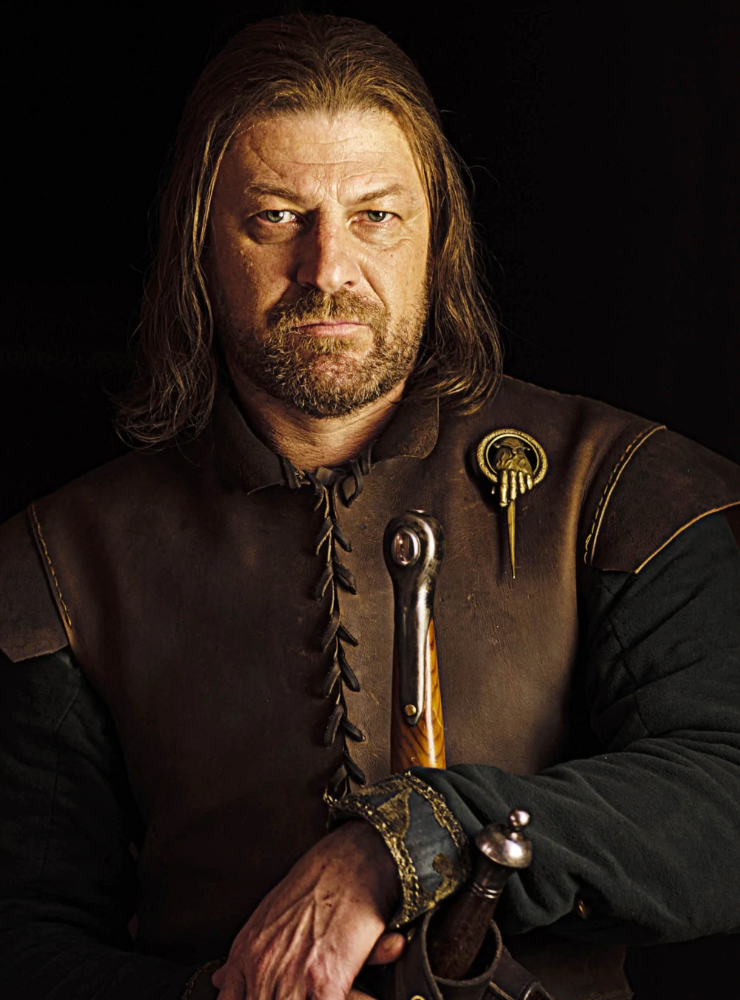
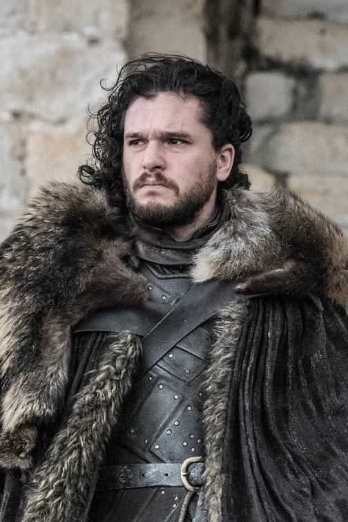

Maison Stark
| Photo | Information |
|---|---|
|  | Nom: Eddard (Ned) Stark |
| Titre: Seigneur de Winterfell, Main du Roi, Gouverneur du Nord, Protecteur du Royaume | |
| Origine: Winterfell | |
| Culture: Nordiens | |
| Âge: 35 ans | |
| Statut: décédé | |
| Mort: Décapité par ser Ilyn Payne sous ordre de Joffrey Baratheon | |
| Enfants: Robb Stark, Sansa Stark, Arya Stark, Bran Stark, Rickon Stark Fils adoptif et neveu: Jon Snow Femme: Catelyn Stark Frères et soeures: Brandon Stark, Lyanna Stark, Benjen Stark |
|
 |
Nom: Catelyn Stark |
| Titre: Lady de Winterfell | |
| Origine: Vivesaigues | |
| Culture: Andals | |
| Âge: 35 ans | |
| Statut: décédée | |
| Mort: Égorgée par Walder Rivers | |
| Enfants: Robb Stark, Sansa Stark, Arya Stark, Bran Stark, Rickon Stark Fils adoptif et neveu: Jon Snow Mari: Eddard Stark Frères et soeures: Lysa Arryn,Edmure Tully Parents: Hoster Tully, Minisa Tully |
|
 |
Nom: Sansa Stark |
| Titre: Reine du Nord, Lady de Winterfell, Princesse (anciennement) | |
| Origine: Winterfell | |
| Culture: Nordiens | |
| Âge: 20 ans | |
| Statut: vivante | |
| Parents: Eddard Stark, Catelyn Stark Frères et soeures: Robb stark, Arya Stark, Bran Stark, Rickon Stark Cousin: Jon Snow, Robin Arryn Oncles et tantes: Brandon Stark, Lyanna Stark, Benjen Stark, Edmure Tully |
|
 |
Nom: Robb Stark |
| Titre: Roi du Nord, Seigneur de Winterfell | |
| Origine: Vivesaigues | |
| Culture: Nordiens | |
| Âge: 19 ans | |
| Statut: décédé | |
| Mort: Frappé à plusieurs reprises par les arbalétriers des Frey, puis poignardé en plein cœur par Roose Bolton | |
| Parents: Eddard Stark, Catelyn Stark Frères et soeures: Sansa Stark, Arya Stark, Bran Stark, Rickon Stark Cousin: Jon Snow, Robin Arryn Femme: Talisa Maegyr Oncles et tantes: Brandon Stark, Lyanna Stark, Benjen Stark, Edmure Tully |
|
 |
Nom: Arya Stark |
| Titre: Princesse (autrefois) | |
| Origine: Winterfell | |
| Culture: Nordiens | |
| Âge: 18 ans | |
| Statut: vivante | |
| Parents: Eddard Stark, Catelyn Stark Frères et soeures: Robb stark, Sansa Stark, Bran Stark, Rickon Stark Cousin: Jon Snow, Robin Arryn Oncles et tantes: Brandon Stark, Lyanna Stark, Benjen Stark, Edmure Tully |
|
 |
Nom: Brandon (Bran) Stark |
| Titre: Roi des Andals et des Premiers Hommes, Seigneur de Winterfell (autrefois), Prince (autrefois) | |
| Origine: Winterfell | |
| Culture: Nordiens | |
| Âge: 17 ans | |
| Statut: vivant | |
| Parents: Eddard Stark, Catelyn Stark Frères et soeures: Robb stark, Sansa Stark, Arya Stark, Rickon Stark Cousin: Jon Snow, Robin Arryn Oncles et tantes: Brandon Stark, Lyanna Stark, Benjen Stark, Edmure Tully |
|
 |
Nom: Rickon Stark |
| Titre: Prince (autrefois) | |
| Origine: Winterfell | |
| Culture: Nordiens | |
| Âge: 11 ans | |
| Statut: décédé | |
| Mort: Transpercé par une flèche tirée par Ramsay Bolton lors de la Bataille des Bâtards. | |
| Parents: Eddard Stark, Catelyn Stark Frères et soeures: Sansa Stark, Arya Stark, Bran Stark, Robb Stark Cousin: Jon Snow, Robin Arryn Femme: Talisa Maegyr Oncles et tantes: Brandon Stark, Lyanna Stark, Benjen Stark, Edmure Tully |
|
|  | Nom: Jon Snow |
| Titre: Gouverneur du Nord (anciennement), Défenseur du Nord (anciennement), Roi du Nord (anciennement), Lord Commandant de la Garde de Nuit | |
| Origine: Winterfell | |
| Culture: Nordiens | |
| Âge: 23 ans | |
| Statut: vivant | |
| Parents: Lyanna Stark, Rhaegar Targaryen Parents adoptifs et oncle et tante: Eddard Stark, Catelyn Stark Cousins: Robb stark, Sansa Stark, Arya Stark, Rickon Stark Cousin: Jon Snow, Robin Arryn Oncles et tantes: Daenerys Targaryen, Catelyn Stark, Brandon Stark, Benjen Stark, Viserys Targaryen |